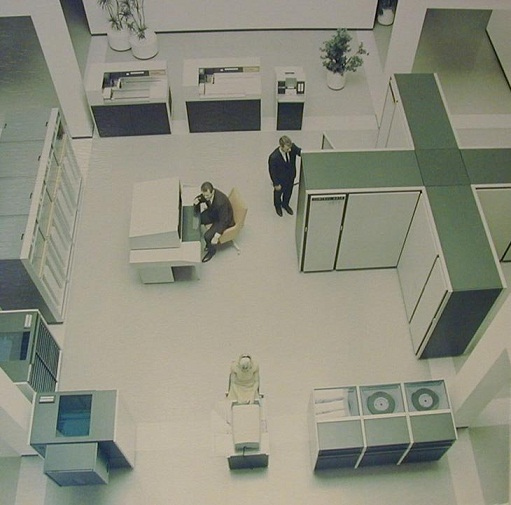
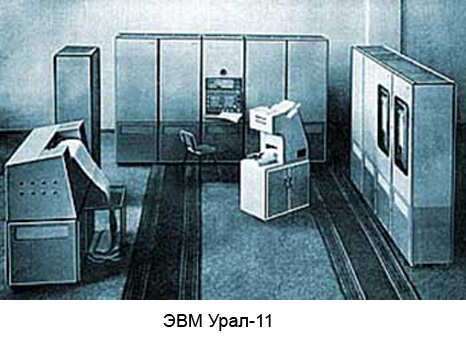
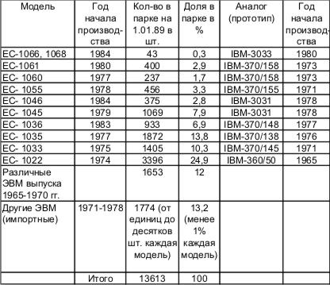
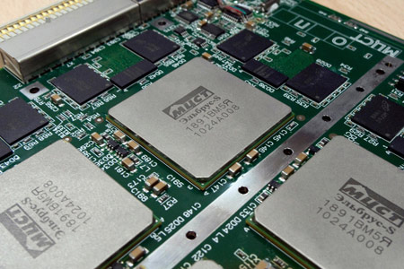

http://malchish-org.livejournal.com/90183.html
Две трагедии российской кибернетики
Самолёт начал снижение, до посадки всего 15 минут, как объявил первый пилот. Вид внизу совершенно напоминает марсианский ландшафт - какой-то красно-оранжевый барельеф на жёлтом фоне. Только снизившись ниже, стало понятно, что это деревья так окрашены, и вместе с пожелтевшей травой они создают такой совершенно безжизненный "песчаный" вид сверху. Осень полностью вступила в свои права, и я за неделю конференции упустил наступление этого сезона у нас в Новосибирске. Конференция же была весьма и весьма интересная. Пожалуй, самая интересная из тех, на которых я побывал. Хотя она не вполне техническая, имеет скорее гуманитарный, исторический характер. Именно поэтому, мой доклад о высокопроизводительных RISC-процессорах, которые когда-то разрабатывались в институте ядерной физики был воспринят не очень восторженно - вместо фотографий и рассказов о людях, их разрабатывавших, я слишком много ввёл в доклад технических деталей. Они сейчас уже никого не интересуют...
Конференция с длинным названием «Развитие вычислительной техники в России и странах бывшего СССР: история и перспективы (SORUCOM)» была не только исторической, но и проходила в историческом месте - в Великом Новгороде. И стены древнего новгородского кремля как-то ассоциировались с былыми успехами советской техники. Их слава уже в прошлом. И как древняя история вечевой демократии на Руси история отечественной вычислительной техники тоже уже содержит свои тайны. Ведь меня давно волновал вопрос - а что же остановило развитие вычислительной техники в СССР? Почему мы, добившись заметных успехов в конце 60-х, так сдали свои позиции в 70-х, а к концу советской эпохи вообще перестали разрабатывать собственные образцы и только тиражировали американские? Хотя военные заказы частично сохранили оригинальные разработки. Тот же ИТМиВТ Лебедева закуклился в секретных военных разработках, став по существу военным ведомством. Именно благодаря военным у нас был "Эльбрус", управлявший первым и единственным полётом "Бурана", были и малые ЭВМ для бортовых военных систем. Однако общее отставание в электронике коснулось в конце концов и военных.
Но что заставило свернуть свои разработки? В тот момент, когда наши достижения не уступали американским? Я уже писал об истории введения "Единой Системы" - линии ЭВМ, копировавшей архитектуру американских компьютеров серии IBM-360. Решение о введении этой политики копирования было сделано в 1967 году, практически сразу после появления БЭСМ-6, которую я считаю самым лучшим компьютером того времени. Не только у нас в стране, но и в мире. Как по производительности, так и по оптимальности архитектуры. Это былая первая советская ЭВМ с конвейерной архитектурой, Сеймур Крей, основной конкурент Лебедева, использовал его на полтора года позже, в системе CDC-7600. И именно эта характерная черта архитектуры гораздо более влияет на производительность системы в целом, чем параллельность различных вычислительных блоков.
Американцы называли производительность CDC-6600, созданной практически одновременно с БЭСМ-6 равной 3 млн. операций в секунду, то есть в три раза больше, чем у БЭСМ-6. При этом в процессоре CDC-6600 было 10 логических блоков, которые теоретически могли работать одновременно, но на практике сделать это очень сложно - для этого нужна специальная операционная система с разделением времени и соответствующие компиляторы. Они тогда только разрабатывались. Американцы указывали суммарную пиковую производительность всех параллельных блоков, которую на практике никогда не достигали. Позже Сеймур Крей выпустил упрощённый вариант CDC-6600 без параллельных блоков - CDC-6400 с производительностью 200 тысяч операций с плавающей точкой в секунду. Пожалуй, это были реальные цифры производительности, достигнутые и самой системой CDC-6600.
Конечно, вопрос приоритета по достигнутой производительности очень спорный, реально производительность вычислительной системы зависит не только от архитектуры, но и от эффективности компиляторов, транслирующих программу с языка программирования в машинный код. Именно поэтому современные сравнения процессоров проводят специальными тестами. И при этом разные тесты дают ещё и разные результаты. То есть эффективность архитектуры вычислительной системы зависит ещё и от самих программ, использующих ресурсы процессоров по-разному. Однако, чисто технически, можно оценивать скорость исполнения программ по тактовой частоте процессора и структуре самого процессора, определяющей сколько тактов приходится на исполнение команд. БЭСМ-6 и CDC-6600 имели одинаковую тактовую частоту в 10 МГц, но конвейерная организация процессора БЭСМ-6 говорила о том, что его программа должна была выполняться быстрее.
Косвенно наше превосходство в производительности компьютеров подтверждает история. В 1975 году, в ходе космического полёта «Союз-Аполлон», управление осуществлялось комплексом, в состав которого входила БЭСМ-6. Эта система позволяла обрабатывать данные по траектории полёта за 1 минуту, в то время как на американской стороне такой расчёт занимал 30 минут.
Однако, вопрос о приоритете тут не главный. В любом случае БЭСМ-6 была уникальной машиной, совершенно оригинальной архитектуры (хотя американцами это и не признаётся) и имевшей высочайший показатель производительности. Трагедией было то, что почти сразу после её появления в СССР было принято решение о производстве клонов IBM-360 - то есть перейти на копирование американской архитектуры! При этом производительность этого семейства американских вычислительных машин не шло ни в какое сравнение с последними отечественными достижениями!
Даже "Википедия" обсуждает данное странное решение:
Как следует из сравнительно недавно (в 2005 году) обнародованных воспоминаний авторитетных представителей академической науки, значительную долю ответственности за решение о переводе советской промышленности, науки и образования к копированию ЭВМ серии IBM-360 и, соответственно, быстрому качественному сокращению поддержки отечественных разработок (в частности, БЭСМ), несут министр МРП СССР В. Д. Калмыков и Президент АН СССР М. В. Келдыш. Так, в статье директора ВЦ РАН, академика Ю. Г. Евтушенко, зам. дир. ВЦ РАН Г. М. Михайлова и др. «50 лет истории вычислительной техники: от „Стрелы“ до кластерных решений» (в сборнике к 50-летию ВЦ РАН) отмечено:
Цитата:
В конце 1966 г. на заседании ГКНТ и Академии наук СССР при поддержке министра МРП СССР В. Д. Калмыкова, Президента АН СССР М. В. Келдыша принимается историческое решение о копировании серии IBM-360. Против этого решения решительно выступили А. А. Дородницын, С. А. Лебедев и М. К. Сулим. Однако они остались в меньшинстве. Итак, решение о разработке семейства ЕС ЭВМ состоялось. Под эту грандиозную программу были переориентированы многие НИИ и заводы, многим специалистам пришлось переучиваться и переквалифицироваться, в студенческие программы вузов стали в основном включать вопросы структуры, архитектуры и ПО ЕС ЭВМ. Была создана новая технологическая база для производства интегральных схем (ИС), полупроводниковой электроники и других средств ВТ. Как и предсказывалось, другие направления развития отечественной вычислительной техники постепенно стали сокращаться из-за недостатка средств, заказчиков, молодых кадров и других объективных и субъективных причин.
Почему и как принималось такое решение? По дороге на конференцию мне посчастливилось оказаться в одном купе поезда со знаменитым академиком Гурием Ивановичем Марчуком, бывшим президентом Академии Наук СССР (1986—91). В 1967 году он был директором Вычислительного центра Сибирского отделения Академии Наук СССР и участвовал в судьбоносном совещании о введении ЕС. В комиссии участвовал также Андрей Петрович Ершов, ещё один будущий академик из новосибирского Академгородка, известный теоретик программирования. По словам Гурия Ивановича оба они тогда выступили против копирования американцев. И сейчас академик последовательно выступает против того решения. Он считает, что это было тупиковое решение, повлёкшее затем к хроническому отставанию СССР в развитии вычислительной техники. Собственно это же очевидно - тот, кто копирует, не имеет шансов обогнать.
Копирование имеет только один смысл - как этап обучения. Когда нет собственных технологий. Сегодня Китай демонстрирует эффективность такого подхода. Но логическим концом такого подхода является всё же переход на собственные разработки. В этом весь смысл первоначального копирования. Так Китай уже начал производить автомобили собственной конструкции после 5 лет копирования. Пытается производить и самолёты оригинальной разработки. Авианосцы, ракеты, различные виды вооружений...
Позже на эту же тему мне удалось побеседовать с другим участником событий, ветераном ИТМиВТ Игорем Михайловичем Лисовским, работавшим когда-то вместе с Лебедевым и Бурцевым, создателями БЭСМ-6 и "Эльбруса". По его словам комиссия приняла положительное решение о введении ЕС на основе IBM-360 и на комиссии Марчук и Ершов проголосовали "за". Вот такие вот противоречия в показаниях. Не хочу никого обвинять, все эти люди очень заслуженные. Возможно, что за давностью лет кто-то и путается. Но вопрос для меня остался открытым.
pogorily: АС-6 первоначально разрабатывалась как аппаратура для сопряжения нескольких БЭСМ-6 в многомашинный комплекс. В процессе разработки сделали и свой центральный процессор. В ЦУПе стоял комплекс АС-6, включающий один свой процессор и две(если правильно помню) БЭСМ-6.
http://housea.ru/index.php/computer/50350
http://badnews.org.ru/news/delo_sozdatelja_pervoj_ehvm_pod_grifom_khranit_vechno/2010-07-19-2238
http://www.ipmce.ru/about/history/projectshistory
Мне в свое время (когда я был студентом) лекции Мельников читал, про АС-6 в том числе рассказывал.
Еще http://www.computer-museum.ru/histussr/as6.htm
Самолёт наконец сел в аэропорту Толмачёво и пассажиры похватав сумки потянулись к выходу из "аэробуса". А320 - в общем неплохой самолёт и довольно тихий. И, видимо, удобен в эксплуатации, судя по популярности у наших авиакомпаний. Тот же Аэрофлот в своём парке имеет более 40 таких авиалайнеров при том, что другие типы не превышают и десятка штук. В общем же количестве А320 гораздо более половины и отечественных там наберётся едва ли десяток. Это я узнал сидя в своём кресле и листая какой-то рекламный журнал авиакомпании. И, надо сказать, другие авиакомпании не слишком отличаются в своём выборе. По-сути сейчас вся Россия летает на этих А320. Опять же, почему не на наших "тушках"? Ту-204 имеет чуть большую вместимость и почти ту же дальность, Ту-334 чуть меньше по вместимости. Ту-204-300 вообще был разработан в трёх вариантах с дальностью полёта 3400, 7500 и 9250 км. Таким образом, Ту-204-300 стал первым отечественным двухмоторным самолётом, способным совершить беспосадочный перелёт из Москвы во Владивосток. Ту-334 и Ту-204 более экономичны по топливу и почти также комфортабельны, как "аэробус". Что мешает использовать их?
Они уступали лишь в одном - первоначальные проекты были на три члена экипажа, что уже многовато по международным стандартам. Нужно два. Но последние модификации устранили и этот недостаток. И опять же, "тушки" чем-то не угодили власти. Президент Медведев заявляет, "что самолёты российского производства имеют целый ряд технических недостатков", после чего Иран отказывается от своих планов закупок российских самолётов. Сделка на сотню самолётов отменена. Это у нас такой "государственный" подход? Раскручивают "Суперджет", который строится на западных комплектующих и появился только-только. При этом гражданские авиационные КБ еле сводят концы с концами.
Нынешняя ситуация с авиапромом очень напоминает ту, что была в 70-х годах прошлого века с вычислительной техникой. Власть целенаправленно лишила заказов отечественных разработчиков. Заставила "интегрироваться" в мировую индустрию путём воспроизводства чужих разработок. Зачем? Какие были мотивы?
Строго говоря, кое-какие объективные причины всё же были. Как и в случае авиапрома. Для любого действия можно найти какие-то оправдания, и даже весьма убедительные. Глава "Сухого" (а ныне и ОАК, и, по сути, всего российского авиапрома) Михаил Погосян заявил:
Есть резон в этих словах? Конечно. Есть только одно "но": Ту-334 разрабатывали ещё в конце 80-х, а первый полёт он совершил 8 февраля 1999 года, более 10 лет назад. Всё это время он ждал когда же будут заказы. Их не было. А "суперджета" с его "бесстапельной" сборкой не было ещё и в проекте. И если бы были заказы, были бы инвестиции, то КБ "Туполева" могло бы создать за это время и новый проект с "бесстапельной" сборкой. "Сухому" же просто повезло, с военными заказами на экспорт они не только сохранили производство, но и смогли его модернизировать. Смогли встроиться, так сказать, в мировой рынок, обзавестись при этом новой технологией сборки. В какой-то мере об этом позаботилась и российская власть и это хорошо. Плохо, что она не проявила аналогичной заботы о гражданских КБ.
Свои резоны можно найти и по вводу "Единой Системы ЭВМ" в конце 60-х:
Сформулирую это немного иначе. Речь, вообще говоря, идёт об идее стандартизации в отношении архитектуры ЭВМ. Действительно, в конце 60-х в СССР существовало более десятка различных КБ, разрабатывавших различные типы ЭВМ. И все они были совершенно несовместимы по системе команд и характеристикам. А значит требовали различное программное обеспечение. Простое введение стандарта резко сократило бы затраты на разработку программного обеспечения, которое стало бы едино для всех ЭВМ.
Сегодня мы этой проблемы не замечаем, поскольку система команд Intel и архитектура x86 (Pentium) по существу стали стандартом. Даже конкурент Intel, компания AMD, вынуждена выпускать процессоры с той же системой команд. И даже сам Intel теперь не может отказаться от введённого им же самим стандарта и вывести на рынок процессор с какой-то иной системой команд. Рынок просто откажется от него - слишком много программного обеспечения уже написано именно для x86. Та же проблема у Microsoft - все новые операционные системы должны быть совместимы с предыдущими версиями. Иначе не будут покупать! Система команд x86 стала отраслевым стандартом точно так же, как API (application programming interface - интерфейс программирования приложений) операционной системы Microsoft Windows. Это не строгое утверждение, Intel производит множество процессоров различной архитектуры. Но не для "десктопов" - настольных персональных компьютеров, здесь царствует именно x86. И в области программного обеспечения "стандартов", вообще говоря, два - Windows и Linux. И стандарты эти вводили не законом, так распорядился рынок.
Эта ситуация всеобщего стандарта на написание программ даёт огромные выгоды - вся масса программного обеспечения, созданная многими разработчиками и за многие годы продолжает быть полезной и постоянно накапливается. Сейчас выбор конкретной аппаратуры зависит чаще от того программного обеспечения, которое сможет на ней работать, чем от конкретных характеристик самой аппаратуры. Именно поэтому у какой-то новой архитектуры с новой системой команд на рынке нет шансов. Если нет режима совместимости со старой x86 никто не рискнёт её внедрять. И это не такое уж открытие, если вспомнить, что современный транслятор с языка программирования - это миллионы строк программы, это огромные затраты высококвалифицированного труда.
Совершенно иной была ситуация в 60-х годах прошлого века. Каждый новый компьютер вызывал необходимость создавать для него программное обеспечение буквально с нуля. И это правило сохранялось даже в рамках одного производителя! И первой это правило нарушила именно американская фирма IBM - она первая в отрасли начала создавать линейку программно совместимых компьютеров с различной производительностью и назначением. И именно поэтому захватила рынок так называемых "промышленных" компьютеров - массовых компьютеров средней производительности для экономических расчётов. Не Сеймур Крей со своими суперкомпьютерами захватил рынок, не фирма CDC, где он работал, а IBM, которая сделала ставку на стандарты программирования. Введение стандарта оказалось более важным, чем миллионы операций в секунду.
Причины успеха IBM не стали секретом для советских руководителей компьютерной индустрии и задача в принципе ставилась правильно - необходимо было создать "Единую Систему" - как стандарт для программного обеспечения ЭВМ. В Советском Союзе с плановой экономикой это сделать было значительно проще, чем в США, достаточно издать приказ, который в итоге и был отдан (приказ Министра радиопромышленности №138 о создании НИЦЭВТ и назначении его головной организацией по разработке Единой системы ЭВМ - ЕС ЭВМ). Другое дело, что основой для этого стандарта могли быть выбраны самые разные архитектуры. И архитектура IBM тут вовсе не была обязательной. Да, фирма IBM наработала достаточно богатое программное обеспечение, которое можно было "позаимствовать" в случае совместимости архитектуры ЭВМ. Но в конце 60-х этот фактор был пока не самым серьёзным в выборе, наши разработки не слишком уступали в богатстве и возможностях ПО.
 Для иллюстрации сказанного достаточно напомнить, что та же БЭСМ-6
производилась в течении 20 лет (до 1987 года) и общее количество произведённых
комплектов достигало 367. Это очень много для таких дорогих машин. Программное
обеспечение таких машин фактически становилось уже промышленным стандартом. Но и
это не рекорд. ЭВМ
"Минск-32" разработки Пржиялковского было выпущено около 3 тыс штук! Что
неудивительно при относительной дешевизне, которая следовала из-за конвейерной
сборки, осуществлённой впервые в практике электронного машиностроения. И для
"Минск-32" было разработано достаточно богатое, по меркам того времени,
программное обеспечение: система символьного кодирования (ССК); макрогенератор и
язык макроописаний с набором библиотечных макрокоманд; транслятор с языка КОБОЛ;
транслятор с языка АЛГАМС; транслятор с языка ФОРТРАН. На совещании СЭВ в
Будапеште в 1972 г. она была признана базовой для организации АСУ в странах СЭВ.
Чем не стандарт? Но "Минск-32" была разработана в 1968 году и стала последней
песней Минского проектного бюро завода счётных машин им. Г. К. Орджоникидзе.
Завод входил в ведомство Министерства радиопромышленности СССР и первым стал
жертвой решения руководства.
Для иллюстрации сказанного достаточно напомнить, что та же БЭСМ-6
производилась в течении 20 лет (до 1987 года) и общее количество произведённых
комплектов достигало 367. Это очень много для таких дорогих машин. Программное
обеспечение таких машин фактически становилось уже промышленным стандартом. Но и
это не рекорд. ЭВМ
"Минск-32" разработки Пржиялковского было выпущено около 3 тыс штук! Что
неудивительно при относительной дешевизне, которая следовала из-за конвейерной
сборки, осуществлённой впервые в практике электронного машиностроения. И для
"Минск-32" было разработано достаточно богатое, по меркам того времени,
программное обеспечение: система символьного кодирования (ССК); макрогенератор и
язык макроописаний с набором библиотечных макрокоманд; транслятор с языка КОБОЛ;
транслятор с языка АЛГАМС; транслятор с языка ФОРТРАН. На совещании СЭВ в
Будапеште в 1972 г. она была признана базовой для организации АСУ в странах СЭВ.
Чем не стандарт? Но "Минск-32" была разработана в 1968 году и стала последней
песней Минского проектного бюро завода счётных машин им. Г. К. Орджоникидзе.
Завод входил в ведомство Министерства радиопромышленности СССР и первым стал
жертвой решения руководства.
Однако сам конструктор машины Виктор Владимирович Пржиялковский так описывает причины введения копирования системы IBM:
"Восьмибитный байт был главнейшим отличием архитектуры IBM 360, эффективно работать с ним не могла ни одна отечественная ЭВМ. Не принять его для машин “Ряда” означало крайне затруднить информационную совместимость с западными ЭВМ, что даже в условиях “железного занавеса” считалось нежелательным.
Принять восьмибитный байт после семибитного (“Минск-32”) и шестибитного (БЭСМ-6, “Весна”, М-220 и др.) было бы перспективно, но за этим решением стояла разрядная сетка 8-16-32-64 бита, вместо привычных 36- и 48-битных. Неизбежное увеличение оборудования можно было компенсировать новой микроэлектронной базой — интегральными микросхемами. А если взять принятую зарубежными фирмами кодировку восьмибитного байта, ставшую де-факто мировым стандартом и систему команд (одно-двухадресную систему с шестнадцатью регистрами общего назначения), то можно было ставить задачу обеспечения полной программной совместимости с IBM-360.
Проведённые в ИПМ АН СССР исследования показали, что программы, составленные для IBM-360, требуют в 1,5-3 раза меньшего объёма памяти, чем программы БЭСМ-6, “Весна”, М-20. Дискуссия в основном сводилась к вопросу о том, возможна ли реализация архитектуры IBM-360 в условиях жёсткого эмбарго, ибо если она без документации и образцов невозможна, то не стоит тратить силы на её точное воспроизведение и её нужно “улучшить”.
Конец этой дискуссии положило решение комиссии по ВТ АН СССР и ГКНТ от 27 января 1967 г. под председательством академика А. А. Дородницына, которым было предложено принять для “Ряда” архитектуру IBM-360 “с целью возможного использования того задела программ, который можно полагать имеющимся для системы 360”. Это решение было принято практически при поддержке присутствующих представителей организаций, которым предстояло работать по программе “Ряд”. Альтернативного предложения на этой комиссии никто не выдвигал."
Вот, как говорится, ещё один авторитетный свидетель о той самой комиссии. IBM и никаких вариантов! Здесь дипломатично не указывается кто конкретно и за что голосовал. Но отмечено, что те организации, которые будут задействованы в производстве ЕС, были активно за копирование. Вообще говоря, головной организацией тут становился вновь создаваемый Научно-исследовательский центр электронной вычислительной техники (НИЦЭВТ). "Для становления нового института из КБПА в него переводился коллектив разработчиков аванпроекта во главе с В.К. Левиным, занявшим должность заместителя директора НИЦЭВТ по научной работе." А организационно-технической основой НИЦЭВТ стал НИЭМ - разработчик М-205, М-220, специализированных (военных) ЭВМ 5Э61, «Радон», «Клен», первых бортовых ЭВМ комплекса «Аргон». Полагаю, что узкие ведомственные интересы при принятии решения тут присутствовали в полной мере - вновь образованный институт приобрёл практически монопольное право на разработки в области вычислительной техники, остальные разработчики ставились в зависимое положение. Ведомственная конкуренция, она играла важную роль в СССР.
Но если вернуться к вопросу объективной целесообразности копирования именно IBM, то чётких аргументов так и не прозвучало. Да, ввели восьмибитный байт, у нас он тогда был слишком разным - шестибитный в БЭСМ-6 и семибитный в «Минск-32». Это что, суть вопроса? А почему не 9, не 12 бит? На мой взгляд, с высоты 21 века, уже и 16 бит мало. Самое время вводить 32-битный байт. Байтовая адресация давно изжила себя, а машинное слово может иметь любую разрядность. Удобная для программистов шестнадцатеричная система счисления делает удобным 16-битный байт. С точки же зрения схемотехники байт следовало бы сделать четырёхбитным - для первых микросхем 4-х разрядная организация была оптимальной.
Может хотели сэкономить на разработке программного обеспечения? Для чего ещё нужна программная совместимость? Брать чужое программное обеспечение, своих программистов переучить на трактористов? Судя по тому, что число программистов не уменьшилось этого всё же не планировалось. Полагаю, что такие аргументы служили в основном ширмой для проявления совершенно других интересов. Ведомственных и некоторых иных. Об этом говорит конечный результат проводимой политики. А также кое-какие странные совпадения. Вот о них и поговорим далее...
videoelektronic: А ведь существовала ещё архитектура ЭВМ фирмы DEC (отечественный аналог - серия "Электроника")!
Эта архитектура, несмотря на 8-ми битный байт не была совместима с IBM и представляла собой отдельное направление, кстати, не столь и тупиковое!
Я успел застать "Электроника-100", "Электроника-60", ДВК, "Электроника МС1201" и т.п. штуки. Кстати, для приложений АСУ ТП - очень даже неплохие.
В самом финише СССР в Зеленограде на "Кванте" (кажется) выпускались хорошие масштабируемые контроллеры серий "Орион" на базе одноплатных микроЭВМ МС12...
DEC это PDP-11. DEC-совместимая архитектура сразу оперировала 16-ти битными словами.
Кстати, много позже, когда уже за развитием IBM-PC наблюдал, то поражался, что в советских микро-ЭВМ системы DEC на ПЛИС-ах применялись уже в 80-х годах технологии, которые в IBM-PC анонсировались, как новые только в 90-е. Например, конвеерная обработка, сопроцессор и т.п.
eldhenn:
>почему не 9, не 12 бит?
Потому что исчезнет совместимость. Потому что было показано, что программы для IBM360 экономнее, чем программы для БЭСМ-6, значит эта архитектура удобнее. И не стоит недооценивать возможность обмена опытом и программами с зарубежными коллегами. Представьте, как бы мы сейчас сети строили, связывая i386-amd64 с нашими 48-разрядными машинами с очень своей, очень советской архитектурой.
malchish_org: Это всё обсуждается в статье. Все эти аргументы уже приведены. И "возможность обмена опытом" нужно не переоценивать. Слишком дорого заплатили уже.
eldhenn: Приведены. И ни единого возражения к ним не приведено.
malchish_org: Тут надо глубже вопросы задавать. Понятно для чего нужна совместимость - для копирования. А копировать зачем? Чтобы самим не делать? И тут мы упираемся в главный маразм либерального мышления - ничего не делать и только пользоваться чужим. Типа так эффективнее. Вопрос только ещё один возникает - расплачиваться чем? Чтобы пользоваться чужим трудом, надо что-то дать взамен. Встроиться в мировой рынок с каким-то своим продуктом. Это, так сказать, универсальный подход.
Можно, конечно, воровать, как и планировалось в отношении ПО. Но логический конец этого известен - отставание и полная ликвидация отечественных кадров, способных что-то производить в данной области. И спор этот, вообще-то имеет отношение к полному техническому отставанию. А оно - к обороноспособности страны. Собственно этот последний момент и был ключевым.
vinfdsc: Была ещё и комиссия под председательством Келдыша, если не ошибаюсь. И там люди после решения увольнялись в знак протеста, вплоть до зам. министров.
http://lib.rus.ec/b/214664/read
Дискуссия, однако, продолжалась, и в декабре 1969 г. в Минрадиопроме состоялось весьма представительное совещание.
У Рамеева, сообщившего автору приведенные выше подробности событий, сохранилась стенограмма совещания.
„Присутствуют: Калмыков, Келдыш, Горшков (председатель ВПК. — Прим. авт.), Савин, Кочетов (представители ЦК КПСС. — Прим. авт.), Раковский (зампред Госплана СССР. — Прим авт.). Сулим, Лебедев, Крутовских, Горшков (заместитель министра радиопромышленности. — Прим. авт.), Левин, Шура-Бура, Ушаков, Арефьева, Пржиялковский, Маткин, Дородницын.
Сулим. О состоянии переговоров с ГДР и ICL.
Вариант IBM-360. В ГДР принята ориентация на IBM-360. Успешно разрабатывается одна из моделей (Р-40). У нас есть задел, есть коллектив, способный начать работу. На освоение операционной системы IBM-360 потребуется 2200 человеко-лет и 700 разработчиков. С фирмой IBM отсутствуют всякие контакты. Возникнут трудности в приобретении машины-аналога. Ее стоимость 4–5 млн. долларов. В ГДР имеется только часть необходимой документации.
Вариант ICL. Получим всю техническую документацию, помощь в ее освоении. Придется провести небольшие переделки. Фирма предлагает закупить партию выпускаемых ею машин. Есть возможность использовать коллектив программистов для подготовки прикладных программ.
Группа наших программистов уже проходит стажировку на фирме. В перспективе совместная разработка ЭВМ четвертого поколения. Фирма старается помочь во всем, поскольку надеется в союзе с европейскими фирмами, в том числе нами, выступить конкурентом IBM. Согласие фирм Италии и Франции об участии в создании вычислительной техники четвертого поколения имеется.
.....
Келдыш. Не следует переориентироваться на ICL, но переговоры с ними по четвертому поколению ЭВМ нужно вести.
Калмыков. Переориентироваться на ICL не будем. Перед немцами поставим вопрос о том, чтобы больше помогали“.
Из состоявшегося обсуждения видно, что против копирования системы IBM-360 были Лебедев, Дородницын, Раковский, Сулим, Маткин; Келдыш говорил: „Нужно купить лицензию и делать свои машины, иначе мы повторим то, что сделали другие“. И Калмыков колебался — перечислил преимущества ориентации на ICL.
Основными активными сторонниками копирования были генеральный конструктор ЕС ЭВМ Крутовских, его первый заместитель Левин, Шура-Бура, Пржиалковский. Если бы на совещании у Калмыкова 18 декабря 1969 года, где принималось окончательное решение, генеральный конструктор высказался против копирования, вычислительная техника в СССР пошла бы по другому пути.
Через несколько месяцев коллегия Минрадиопрома окончательно решила вопрос в пользу системы IBM-360.
М.К. Сулим прямо на заседании коллегии подал заявление об уходе с поста заместителя министра.
gray_bird: Интересные мемуары программиста, который как раз работал в ту эпоху, о
которой вы пишете.
Крайне любопытно, косвенно он дает ответ, почему СССР принял решение копировать
IBM/360, и почему это решение было адекватным на тот момент.
http://dmi3s.blogspot.com/2011/04/i.html
malchish_org: Процитирую главную мысль: "Ни одна из декларируемых целей не была выполнена. Споткнулись как раз на том, ради чего весь сыр-бор затевали: на организации массового выпуска высокотехнологической продукции, на развертывании инфраструктуры для ее эксплуатации. На том, чего в Советском Союзе органически, генетически не умели делать ни в одной из отраслей, кроме оружейной (и то, может это «кроме» от нашей неосведомленности?)."
Она совершенно неверна и даже опровергается предыдущими историческими наблюдениями автора. Вот например более правильный довод парой строк повыше:
"Хороша ложка к обеду. За десять с лишним лет сложилась целая ЕС-индустрия – заводы, НИИ и КБ, издательства и ученые советы, писались книги, защищались диссертации, строились наполеоновские планы.... И все это было уже никому не нужно. Вроде бы освоили, наконец, выпуск долгожданных 370-х аналогов. Случись лет на семь-восемь раньше – был бы триумф. Сейчас же – никому не нужно..."
Какой нужно было сделать из него вывод? Простой - копирование ВСЕГДА ведёт к отставанию. Независимо от качества копирования. А автор (в общем довольно талантливый) почему-то всё свёл к обычной либеральной пропаганде СССР не мог ничего делать высокотехнологичного. Очевидное же враньё после БЭСМ-6 и Гагарина.
В аэропорту меня встретила наша институтская "Волга". Это было приятно. Поездка по "казённой надобности" имеет свои преимущества. Будь она по "личной", я бы не стал тратиться на такси и добирался бы в Академгородок на перекладных, через городской вокзал - прямых автобусных маршрутов в Академгородок уже давно нет. А ведь в советское время был "экспресс" под номером "108", который ходил почти каждый час. И довольно много народа ездило на нём. Но с приходом к власти демократов почему-то резко убавилось количество желающих воспользоваться своим правом на свободу перемещений. Маршрут стал непопулярным. В результате сначала "Икарус" заменили "пазиком" и сделали рейсы реже, а потом маршрут и вовсе закрыли...
Вскоре я уже мчусь на старенькой "Волге" в родной Академ и болтаю с молодым парнем-водителем. Разговор о прекрасной погоде, о машинах, о больших штрафах за нарушения правил... В общем, ни о чём. Я весело болтаю ни о чём и продолжаю думать о той истории, что произошла в далёком 1967 году. В чём была её трагедия? В том, что насильно внедрили восьмибитный байт? Или в том, что выкрутили руки разработчикам ЭВМ заставив использовать систему команд IBM? Эффект знаменитого приказа был не в этом. Чтобы понять все его трагические последствия нужно немного глубже вникнуть в ситуацию, в которой его принимали.
А дело тут в том, что с одной стороны, фактически у нас уже наметились свои стандарты - в классе супер-ЭВМ это была естественно БЭСМ-6, а в классе средних ЭВМ общего назначения "советский рынок" захватил "Минск-32". На свободном рынке стандартом становится просто наиболее массовый продукт - никто никому не запрещает производить что-то своё, но покупатель тут сам устанавливает правила. Ему не нужно нестандартное оборудование, которое никуда не подключить и которое не похоже на всё то, с чем он ранее работал. Именно так захватывала рынок IBM - покупатель, поработав на какой-то из её машин, вновь покупал новую машину от IBM хотя бы потому, что экономил на программном обеспечении. Массовый спрос означало и массовое производство, которое уменьшало удельные расходы и IBM могла ещё и цены снижать. Советская плановая экономика могла покупателю выкрутить руки, но только если убрать альтернативу. А она до какого-то времени была - тот же "Минск-32" продолжали выпускать вплоть до 1975 года, когда уже начался выпуск ЕС-1020 в том же Минске. Самое забавное, что главным конструктором ЕС-1020 был тот же В. В. Пржиялковский, создатель "Минск-32". Реализуя архитектуру IBM ему пришлось пожертвовать производительностью - ЕС-1020 получилась в три раза менее производительна, чем "Минск-32" (20 тыс операций в секунду для ЕС-1020 против 65 тыс операций в секунду для "Минска"). Однако в 1975 году выпуск "Минска" прекратили и в этом же году там начали производить ЕС-1022 с производительностью 40 тыс операций в секунду. В этот момент исчезла альтернатива. "Минск-32" заменила "ЕС-1022" с меньшей производительностью и советскому потребителю ничего не оставалось, как внедрять ЕС и переучивать персонал для работы на ней. Один из ветеранов-программистов так описывает "Минск-32":
"Мне она сразу понравилась. Это был уже настоящий, серьёзный мэйнфрейм: шесть нормальных лентоводов (ленты в бобинах, прощайте удочки!), перфокарточный ввод-вывод (по сравнению с перфолентой это колоссальный прогресс, оценить который может только тот, кто хорошенько надолбался с перфолентами). Конечно, скоростной АЦПУ, никаких «стрекоталок». Быстродействие, память 64 килослова (в слове 37 бит) – супер! И самое поразительное – магнитные барабаны (вот забыл, сколько их было штук). В конце 60-х и первой половине 70-х «Минск-32» был самой популярной машиной (вне академической и военной сфер), неприхотливой, на редкость удачной. В ней как будто был угадан тот максимальный уровень сложности, который возможен в массовом (и не военном) изделии советского хайтека."
И про ЕС-1020, выпускавшейся одновременно с "Минск-32" на том же заводе:
"Только в 1973 мне довелось увидеть первую машину ЕС-1020. И она... не работала. Ее налаживали, налаживали, налаживали... Наконец, к концу года заработала с горем пополам и оказалось, что машина по памяти, быстродействию, периферии слабее, чем «Минск-32», который уже лет пять как скромно трудился себе в соседнем зале. И так повсюду. Обещанные массовые машины действительно поступали туда, где ещё вчера обладание настоящей ЭВМ было несбыточной мечтой: в рядовые (не оборонные) проектные институты, КБ и НИИ, в областные статуправления, на предприятия министерств, не входящих в пресловутую «девятку». Однако, качество техники было ужасающим, она налаживались месяцами и требовала неустанных усилий для поддержания работы. Конечно, были исключения. Кое-каким счастливчикам перепадали немецкие 1040 и польские 1032."
К сожалению вполне объективные наблюдения ветерана сдобрены не очень справедливой критикой "советов". Процитирую главную мысль автора, ставшего в конце концов канадским эмигрантом:
"Ни одна из декларируемых целей не была выполнена. Споткнулись как раз на том, ради чего весь сыр-бор затевали: на организации массового выпуска высокотехнологической продукции, на развёртывании инфраструктуры для её эксплуатации. На том, чего в Советском Союзе органически, генетически не умели делать ни в одной из отраслей, кроме оружейной (и то, может это «кроме» от нашей неосведомлённости?)."
Эта мысль совершенно неверна и даже опровергается предыдущими наблюдениями самого автора. Вот, например, более правильный довод всего абзацем выше:
"Хороша ложка к обеду. За десять с лишним лет сложилась целая ЕС-индустрия – заводы, НИИ и КБ, издательства и учёные советы, писались книги, защищались диссертации, строились наполеоновские планы.... И все это было уже никому не нужно. Вроде бы освоили, наконец, выпуск долгожданных 370-х аналогов. Случись лет на семь-восемь раньше – был бы триумф. Сейчас же – никому не нужно..."
Какой нужно было сделать из него вывод? Простой - копирование ВСЕГДА ведёт к отставанию. Независимо от качества копирования. А автор (в общем довольно талантливый) почему-то всё свёл к обычной либеральной мифологии - "СССР не мог ничего делать высокотехнологичного". Как можно было это заявлять после той же БЭСМ-6, которую автор сам описывал и нахваливал? Удивительные бывают нестыковки в логике у людей с либеральными взглядами. Особенно эмигрантов. Тут видимо уже психология работает - идёт подсознательное оправдание своего бегства из родной страны.
Однако, вернёмся к описанию ситуации в области вычислительной техники в конце 60-х - начале 70-х. Появление супер-ЭВМ БЭСМ-6, массовое производство "Минск-32" и его очевидные достоинства её полностью не исчерпывают. В СССР был ещё один конкурент для машин IBM серии 360 и сочетавший в себе те достоинства системы, к которым так стремилось руководство компьютерной индустрии. Это машины серии "Урал" разработки Башира Искандеровича Рамеева. Рамеев стоял у истоков советской кибернетики, он был участником разработки первой в Советском Союзе электронной цифровой вычислительной машины (совместно И.С. Бруком), был заместителем главного конструктора первой серийной ЭВМ "Стрела", и он первым в стране сформулировал и реализовал в разработанном под его руководством семействе машин принцип программной и конструктивной совместимости. Произошло это до того, как этот принцип внедрили в IBM! Как описывает Малиновский:
"Основные черты нового поколения машин были изложены в аван-проекте на семейство ЭВМ "Урал-11", "Урал-14", "Урал-16" (см. копию титульного листа аванпроекта. Приложение 14.). Он появился на полтора года раньше публикаций об американском семействе машин IBM-360. Таким образом идея создания семейства программно и конструктивно совместимых ЭВМ была высказана Рамеевым независимо от американских ученых и реализована практически одновременно. Важно отметить и то, что в отличие от первых моделей семейства IBM-360 семейство "Уралов" обеспечивало возможность создания систем обработки информации, состоящих из нескольких одинаковых или разных машин, было рассчитано на работу в сетях и, наконец, было "открытым" для дальнейшего наращивания технических средств. Математическое обеспечение "Уралов" находилось на достаточно высоком уровне, о чем свидетельствует акт Государственной комиссии, подписанный академиком А.А. Дородницыным:
"Впервые в СССР реализован системный подход к разработке математического обеспечения для ряда ЭВМ. В разработанной системе использованы собственные оригинальные решения. Разработанная операционная система выполняет основные функции, реализуемые в современных операционных системах. Документация по математическому обеспечению отличается высоким качеством, полнотой и единством оформления"."

Ещё в ноябре 1962 года в Пензе (в НИИ математических машин, где Рамеев занимал должность главного инженера и заместителя директора по научной работе) была закончена разработка унифицированного комплекса элементов "Урал-10", рассчитанного на автоматизированное производство. И хотя эти элементы разрабатывались для использования в серии ЭВМ "Урал-11" — "Урал-16", они нашли широкое применение и в других средствах вычислительной техники и автоматике. Для этих целей было выпущено несколько миллионов штук элементов. То есть это было уже готовое массовое производство унифицированных модулей - основы для массового же производства ЭВМ. Унифицированный комплекс логических элементов представлял собой набор полупроводниковых схемных элементов модульной конструкции из 5 типов основных и 10 типов специальных модулей (для накопителей и внешних устройств). Электронные схемы “Урал-11” на 90% состояли из двух типов основных диодно-транзисторных модулей, которые размещались в ячейки, имеющие запаиваемый разъём. Их выпуск освоил Пензенский завод вычислительных электронных машин - ВЭМ. В семейство полупроводниковых "Уралов" входили три модели: "Урал-11", "Урал-14" и "Урал-16". Первые две модели семейства стали выпускаться серийно с 1964 года, а последняя — с 1969 года. За период с 1965 по 1975 гг. было выпушено 123 комплекта "Урал-11". ЭВМ "Урал-14" выпускалась с 1965 по 1974 гг., был произведён 201 экземпляр машин. А вот старшая модель семейства была выпущена лишь в 3-х экземплярах в 1969 г. - сказалась переориентация на IBM. К концу 60-х годов пензенские "Уралы" применяли в многочисленных вычислительных центрах НИИ, на заводах, в банках, в системах военного назначения. На их базе были созданы многомашинные системы "Банк", "Строитель", системы обработки данных, получаемых со спутников. Это первое в нашей стране семейство машин с унифицированной системой организации связи с периферийными устройствами (унифицированный интерфейс), унифицированной оперативной и внешней памятью. Однако уникальность "Уралов" была не только в их программной совместимости, в унификации электронных модулей, но и в способности создавать многомашинные комплексы, способные обрабатывать единый массив информации. Каналы связи "Уралов" поддерживали скорость более 2 мегабит в секунду (2 200 000 бит в секунду)! Это было задолго до появления сетевых технологий за рубежом. И, конечно, на ЭВМ семейства IBM-360, выпускаемых в те годы, такие системы построить было невозможно.
В 1968-1969 гг. завершалась работа над проектом уже многопроцессорной ЭВМ "Урал-25", старшей моделью, завершавшей семейство. И была начата проработка "Урал-21" на интегральных схемах. Это был запланированный переход к 4-му поколению. Что остановило работу? Копирование IBM/360. Конечно разработчики "Уралов" во главе с Рамеевым, так же как Глушков и Лебедев - другими известными разработчиками ЭВМ, были против копирования. Они предлагали вести новую разработку на основе отечественного опыта, хотя и с учётом зарубежных достижений. В октябре 1967 г., после известного совещания, они пишут письмо руководству Минрадиопрома, основному инициатору создания ЕС ЭВМ:
"Решение о разработке единого ряда электронных математических машин, предназначенных для использования в народном хозяйстве, правильное и своевременное. Оно призывает к объединению усилий коллективов разработчиков математических машин. Нужно ожидать, что это позволит резко увеличить производство математических машин благодаря единой технологической и конструктивной основе и даст возможность использовать единое математическое обеспечение для большинства применений.Успех, который предполагается достигнуть в результате разработки единого ряда машин, целиком определяется путями решения этого вопроса. Не может не вызвать серьёзных возражений решение о копировании моделей машин системы IBM-360, предложенное комиссией по вычислительной технике при Президиуме АН СССР 26.1.67 г. Необходимо учитывать, что система IBM-360, являясь разработкой 1963-1964 годов, уже в настоящий момент начинает отставать от уровня требований, предъявляемых к математическим машинам.
... Предложение о копировании системы IBM-360 эквивалентно планированию производства математических машин в семидесятые годы на уровне математических машин начала шестидесятых годов. Учитывая тенденцию развития науки и техники, можно смело утверждать, что в семидесятые годы архитектура системы IBM-360 будет устаревшей, не способной удовлетворить требования, предъявляемые к вычислительной технике.
...Архитектура системы IBM-360 имеет ряд недостатков, без устранения которых недопустима разработка ряда машин, предназначенных для использования в ближайшее десятилетие, так как совокупность этих недостатков делает систему не соответствующей даже сегодняшним требованиям. Копирование зарубежной разработки исключит возможность использования собственного опыта, накопленного коллективами разработчиков математических машин, и на ближайшие годы приведёт к отказу от начала разработок, использующих новые принципы. Все это приведёт к торможению развития вычислительной техники в стране."
Удивительно, насколько они оказались правы! Однако тогда "Урал" был незаслуженно забыт. Кстати сказать, пензенская школа разработчиков играла важнейшую роль в СССР - это была кузница кадров для Минска, Еревана, Тбилиси. Тот же Пржиалковский - выходец из пензенского КБ, это ученик Рамеева. И именно поэтому "Минск" получился очень технологичен - выпускался на унифицированных модулях на конвейере. Поэтому же позиция Пржиалковского в отношении копирования IBM удивляет. Хотя, если учесть его дальнейшую карьеру, не слишком - с 1971 по 1977 гг. Виктор Владимирович — заместитель директора по научной работе, главный инженер НИЦЭВТ (головной организации в разработке ЕС) и заместитель Генерального конструктора Единой системы ЭВМ стран социалистического содружества (ЕС ЭВМ), в 1977 г. он назначен директором НИЦЭВТ, а затем до 1988 г. становится генеральным директором НПО “Персей”, Генеральным конструктором ЕС ЭВМ, главным конструктором БЦВМ комплекса “Аргон”. Очевидно, что для карьеры нужно было не слишком перечить начальству...
Таким образом, в СССР в 1967 году альтернатив для семейства IBM хватало. Однако альтернативы имелись и другие - можно было взять за основу иную западную фирму! Если IBM отказалась от предложенного ей сотрудничества (были такие переговоры), то английская фирма ICL сама его предложила. И её предложения реально обсуждались на заседаниях в правительственных комиссиях. Одно из последних состоялось уже позже 1967 года - в декабре 1969 г. в Минрадиопроме. Рамеев сохранил стенограмму совещания и передал его Малиновскому, который и опубликовал его в своей книге. Приведу его также:
"Присутствуют: Калмыков, Келдыш, Горшков (председатель ВПК. — Прим. авт.), Савин, Кочетов (представители ЦК КПСС. — Прим. авт.), Раковский (зампред Госплана СССР. — Прим авт.). Сулим, Лебедев, Крутовских, Горшков (заместитель министра радиопромышленности. — Прим. авт.), Левин, Шура-Бура, Ушаков, Арефьева, Пржиялковский, Маткин, Дородницын.
Сулим. О состоянии переговоров с ГДР и ICL.
Вариант IBM-360. В ГДР принята ориентация на IBM-360. Успешно разрабатывается одна из моделей (Р-40). У нас есть задел, есть коллектив, способный начать работу. На освоение операционной системы IBM-360 потребуется 2200 человеко-лет и 700 разработчиков. С фирмой IBM отсутствуют всякие контакты. Возникнут трудности в приобретении машины-аналога. Ее стоимость 4–5 млн. долларов. В ГДР имеется только часть необходимой документации.
Вариант ICL. Получим всю техническую документацию, помощь в ее освоении. Придется провести небольшие переделки. Фирма предлагает закупить партию выпускаемых ею машин. Есть возможность использовать коллектив программистов для подготовки прикладных программ.
Группа наших программистов уже проходит стажировку на фирме. В перспективе совместная разработка ЭВМ четвертого поколения. Фирма старается помочь во всем, поскольку надеется в союзе с европейскими фирмами, в том числе нами, выступить конкурентом IBM. Согласие фирм Италии и Франции об участии в создании вычислительной техники четвертого поколения имеется.
Пржиалковский. По IBM-360 имеем систему из 6 тыс. микрокоманд, 90 % схем ТЭЗов, 70 % растрассировано, 7000 единиц конструкторской документации. При переориентировке на ICL придется переработать весь этот задел, это задержит работы на 1–1,5 года. Понадобится много валюты (для закупки ЭВМ фирмы ICL). Вариант сотрудничества с ГДР, успешно ведущей работу по IBM-360, предпочтительнее. Если усилить коллектив математиков, то ДОС можно разработать к 1971 г. Пора прекратить колебания.
Крутовских. Наш проект предусматривал систему моделей IBM-360. При переориентации на фирму ICL состав моделей должен быть другим. Меняются технические характеристики. Нужно 4–5 месяцев на аван-проект. В фирме ICL нет ясности по старшим моделям. Они добавляются к ряду малых и средних ЭВМ как суперЭВМ. Этого лучше не делать. При переориентации задержатся сроки подготовки техдокументации на 1,5–2 года, а может и больше. Работая с ГДР по IBM-360, можно получить ДОС и ОС к началу серийного производства, снимается вопрос об их разработке. Немцы ушли дальше нас. Они переориентироваться не смогут. Англичанам нужен рынок. Они будут водить нас за нос. По большим машинам они сотрудничать не будут. 150 машин у них купить нельзя.
Дородницын. Вопрос освоения IBM-360 подается в упрощённом виде. Все значительно сложнее. На освоение ОС надо не менее четырех лет, и неизвестно, что получим. Надо самим (вместе с ICL) создавать ДОС и ОС и ориентироваться на разработки машин совместно с ICL.
Лебедев. Система IBM-360 — это ряд ЭВМ десятилетней давности. Создаваемый у нас ряд машин надо ограничить машинами малой и средней производительности. Архитектура IBM-360 не приспособлена для больших моделей (суперЭВМ). Англичане хотят конкурировать с американцами при переходе к ЭВМ четвертого поколения. Чем выше производительность машины, тем в ней больше структурных особенностей. Англичане закладывают автоматизацию проектирования. Система математического обеспечения для „Системы-4“ динамична, при наличии контактов ее вполне можно разработать. Это будет способствовать подготовке собственных кадров. Их лучше обучать путем разработки собственной системы (совместно с англичанами).
Шура-Бура. С точки зрения системы математического обеспечения американский вариант предпочтительнее. ОС требуется усовершенствовать. Для этого надо знать все программы.
Келдыш. Нужно купить лицензии и делать свои машины. Иначе мы будем просто повторять то, что сделали другие. В принципе, большие машины надо создавать самим.
Лебедев. Наши математики считают, что готовить программистов лучше по методике англичан.
Раковский. Нужно думать о перспективе. Нужна единая концепция. Все говорили, что система математического обеспечения IBM совершеннее, но ОС громоздка. В течение четырех-пяти лет ее нельзя полностью освоить. Трудно, но сегодня нужно принять решение. Если ориентироваться на ICL, то будет трудно с ГДР; за пять лет немцы выпустят 200 экземпляров Р-40. И все-таки следует принять предложение ICL.
Крутовских. Все разработчики, кроме Рамеева, не хотят переориентироваться на фирму ICL. P-50 будет готова в 1971 г.
Калмыков. Наличие ДОС сразу дает возможность использовать машины, которые мы начнем выпускать. Много программ можем получить у немцев. Отрицательные моменты. Мы не имеем машин IBM-360. И не будем иметь контактов с фирмой IBM. Если переориентироваться на фирму ICL, то потеряем время. Но с ними возможны прямой контакт и сотрудничество при создании ЭВМ четвертого поколения. Это большое преимущество. Четвертое поколение ЭВМ они будут делать без американцев, хотят быть конкурентоспособными по отношению к IBM.
Келдыш. Не следует переориентироваться на ICL, но переговоры с ними по четвертому поколению ЭВМ нужно вести.
Калмыков. Переориентироваться на ICL не будем. Перед немцами поставим вопрос о том, чтобы больше помогали“.
Из состоявшегося обсуждения видно, что против копирования системы IBM-360 были Лебедев, Дородницын, Раковский, Сулим, Маткин; Келдыш говорил: „Нужно купить лицензию и делать свои машины, иначе мы повторим то, что сделали другие“. И Калмыков колебался — перечислил преимущества ориентации на ICL. Основными активными сторонниками копирования были генеральный конструктор ЕС ЭВМ Крутовских, его первый заместитель Левин, Шура-Бура, Пржиалковский. Если бы на совещании у Калмыкова 18 декабря 1969 года, где принималось окончательное решение, генеральный конструктор высказался против копирования, вычислительная техника в СССР пошла бы по другому пути."
 Вообще-то министр МРП Калмыков не колебался, а пробивал вариант IBM, просто
вёл себя дипломатично, как и положено руководителю такого ранга. Тоже самое
можно сказать про Келдыша. А интрига по поводу варианта ICL несколько
интереснее, чем может показаться с первого взгляда. Дело в том, что
ICL System-4
- это копия
RCA Spectra 70, которая сама является клоном IBM-360! То есть, это
перепев той же системы, но в другом исполнении. И, надо заметить, что "перепев"
тут был не хуже оригинала, а лучше - у IBM взята лишь пользовательская часть
системы команд, а "супевизорская", или системная, переделана. И не просто так, а
для увеличения быстродействия - скорость переключения между программами стала
значительно быстрее.
Вообще-то министр МРП Калмыков не колебался, а пробивал вариант IBM, просто
вёл себя дипломатично, как и положено руководителю такого ранга. Тоже самое
можно сказать про Келдыша. А интрига по поводу варианта ICL несколько
интереснее, чем может показаться с первого взгляда. Дело в том, что
ICL System-4
- это копия
RCA Spectra 70, которая сама является клоном IBM-360! То есть, это
перепев той же системы, но в другом исполнении. И, надо заметить, что "перепев"
тут был не хуже оригинала, а лучше - у IBM взята лишь пользовательская часть
системы команд, а "супевизорская", или системная, переделана. И не просто так, а
для увеличения быстродействия - скорость переключения между программами стала
значительно быстрее.
Для нас это означало, что с точки зрения библиотек программ варианты идентичны, но требовалась иная операционная система. И англичане тут предлагали сотрудничество! Ничего не надо было воровать! Нам дали бы операционную систему и помогли бы её адаптировать для различных вариантов аппаратуры. А мы сами могли бы участвовать в её развитии. Очевидно, что этот вариант был более предпочтителен варианта IBM и наиболее честные из участников совещания это хорошо понимали. Тот же Сулим, замминистра Минрадиопрома, просто написал заявление об уходе сразу после очередной коллегии министерства. Это был акт возмущения той глупостью, что делало руководство. Последствия этой глупости приводит Рамеев в своём исследовании в 1991 году:

Это парк машин 1989 года! Заметим, что ЕС-1022, копию IBM-360/50 разработки 1965 года, у нас начали производить лишь в 1974 году. Почти четверть парка ЭВМ 1989 года составляют эти ЕС-1022, которые, заметим, были хуже "Минск-32" по параметрам. Сам Рамеев приходит к следующему заключению:
"Как видно из таблицы, парк ЭВМ общего назначения состоит из:
24,9% ЭВМ технического уровня 1965 г. (ЕС-1022);
12% различных ЭВМ выпуска 1965-1970 годов;
13,6% ЭВМ технического уровня 1971 г. (ЕС-1033, ЕС-1055);
36% ЭВМ технического уровня 1973-1978 годов (ЕС-1035, ЕС-1036, ЕС-1045, ЕС-1046, ЕС-1060, ЕС-1061);
13,5% другие ЭВМ технического уровня 1971-1980 гг. (23 разные модели ЕС ЭВМ, АРМы на базе ЕС ЭВМ, импортные ЭВМ).Выбор зарубежных аналогов производился по номинальной производительности без учета дополнительных параметров, характеризующих технический уровень. Если учесть такие параметры, как технический уровень элементной базы, емкости запоминающих устройств, состав периферийных устройств, материалоемкость (габариты), энергопотребление и надежность ЭВМ, находящихся в эксплуатации, то их технический уровень следует изменить на несколько лет назад. И следует считать технический уровень, например, не "Х-летней давности", а "более X-летней давности".
Таким образом, структура парка ЭВМ на базе процессоров общего назначения по техническому уровню характеризуется так: 50% парка состоит из ЭВМ, которые по техническому уровню отстают на 20-25 лет; 49% - более чем на 10-15 лет. Технический уровень парка, выраженный в годах, как будто ни о чем не говорит, но за этим скрывается огромная разница в технико-экономических показателях и эффективности машин парка. По мере развития научно-технического прогресса, совершенствования технологии и появления новых технических решений в условиях конкуренции постоянно происходит улучшение показателя "характеристика/стоимость" средств вычислительной техники и информатики, отражающего высшие достигнутые к этому времени технические, технологические, эксплуатационные и экономические характеристики.
По зарубежным источникам, за 15 лет обобщённый технико-экономический показатель отношения "характеристика/стоимость" ЭВМ увеличился в 1000 раз, а надежность - более чем в 15 раз. На эксплуатацию устаревших средств вычислительной техники и информатики тратятся кадровые, финансовые и материальные ресурсы, не адекватные тому технико-экономическому эффекту, которое они дают. Так, убытки только из-за простоев по техническим причинам (низкой надежности) вычислительных систем и ЭВМ в парке страны составили в 1989 г. порядка 500 млн. рублей. Таковы экономические и технические последствия для страны волевого решения о копировании IBM-360."
suhov: Z80 появился появился как чаяние двух интелловских разработчиков которые хотели преодолеть недостатки i8080 (по-моему и AMD было основано перебежчиками если я не ошибаюсь). Когда могут и хотят - тогда и копирование не помеха. Дело не в нём. Дело в том, что вся советская система была не приспособлена для высоких технологий. Решения которые принимаются центрально и спускаются сверху вниз по иерархии обречены быть некомпетентными - и это в условиях подавления инициативы снизу. Всё остальное уже следствие этого.
malchish_org: Зачем повторять либеральный миф? Как тот же канадский эмигрант? Как будто в статье нет примеров высоких технологий, которые реализовала советская система. Просто в управлении плановой экономикой увеличивалась роль конкретных руководителей. И дело тут даже не в компетенции оных - всегда есть возможность провести экспертизу со специалистами. Дело во вмешательстве личных интересов - амбиций, обид, корысти...
Конечно, такие мотивы поведения даже более проявляются в капиталистической системе, но их влияние редуцировано рыночной конкуренцией и условием получения прибыли. Советская система требовала заметно большего контроля со стороны общества.
suhov: Вот видите, вы же сами всё и понимаете :) когда система "требует значительно большего контроля от общества" это и означает она просто неконкурентноспособна. Что же касается достижений СССР в области высоких технологий - никто их не отрицает. Пример который вы разбираете как раз красноречиво показывает где была ахиллесова пята советской системы. Всё хорошо когда на конструкторов можно надавить и они выдадут гениальное в единичном экземпляре. Плохо когда надо в масштабах страны выдавать продукцию. Пример с ЕС как раз это и демонстрирует. Как только дело дошло до массового выпуска и вооружения всей индустрии столь необходимым оборудованием как ЭВМ так дело и пошло на перекосяк. Какие-то единичные люди помешали всей стране модернизироваться. Ну что ж, грош цена такой стране если ей могли помешать решения отдельных людей. Чтобы легче было понять почему децентрализованная западная капсистема выигрывает можно посмотреть на пример Napster то есть централизованной системы файлового обмена и децентрализованным тем же Bittorrent-ом. Современные пиратские войны доказали в очередной раз какой вид систем более живучий.
malchish_org: "когда система "требует значительно большего контроля от общества" это и означает она просто неконкурентноспособна."
Не означает. Это означает только то, что было сказано. Система социализма требует общественного контроля над политической элитой. Это вполне выполнимое требование, с одной стороны. С другой - проблема некомпетентного руководства - универсальная проблема и капитализм вовсе не решает её эффективно. Хотя бы потому, что конкуренция идёт не только по эффективности производства. Конкуренция идёт в основном по размеру кошельков - у кого жопа толще, тот и выиграл. И фирма DEC, о которой речь пойдёт далее, прекрасный пример такой конкуренции.
СССР не всегда страдал от некомпетентного руководства. У него был и славный период - как раз до конца 60-х. До этого момента страной руководила та элита, что формировалась ещё Сталиным. У него был жёсткий отбор и руководители отраслей и заводов редко ошибались. Это были гениальные руководители. Но с приходом Хрущёва в элиту начал вливаться новый слой, совершенно не компетентный. Включая самого Хрущёва. Сталин не сумел создать механизма отбора элиты, который бы работал сам, без его вмешательства - вот основная проблема советского проекта.
А что касается "массового выпуска", которое "пошло наперекосяк", то в статье есть пример "Минска-32", который выпускался именно массово и удовлетворял всем требованиям своего времени. Вы игнорируете факты.
http://malchish-org.livejournal.com/93243.html
 Недавно
мне попались на глаза
материалы с 9 Международной выставки "ChipExpo-2011", которая проходила в
Москве в период с 1 по 3 ноября в Центральном выставочном комплексе
"Экспоцентр". Там были экспонаты "МЦСТ" и "ИНЭУМ им. И.С.Брука", которые
несколько добавили оптимизма в отношении нашей российской микроэлектроники.
Хоронить её рано, некоторые её достижения я уже
отмечал ранее. Имеющийся разрыв в технологиях постепенно сокращается. Более
того, слова
генерала Макарова (начальника Генштаба РФ) о том, что российский истребитель
пятого поколения Т-50 будет обладать рядом преимуществ перед американским F-22
Raptor прежде всего за счёт высокого, "практически человеческого интеллекта",
могут оказаться правдой. Как ни странно, но российская авионика на нашем
истребителе может на порядок превосходить возможности американского конкурента.
Прежде всего за счёт более производительных микропроцессоров отечественной
разработки!
Недавно
мне попались на глаза
материалы с 9 Международной выставки "ChipExpo-2011", которая проходила в
Москве в период с 1 по 3 ноября в Центральном выставочном комплексе
"Экспоцентр". Там были экспонаты "МЦСТ" и "ИНЭУМ им. И.С.Брука", которые
несколько добавили оптимизма в отношении нашей российской микроэлектроники.
Хоронить её рано, некоторые её достижения я уже
отмечал ранее. Имеющийся разрыв в технологиях постепенно сокращается. Более
того, слова
генерала Макарова (начальника Генштаба РФ) о том, что российский истребитель
пятого поколения Т-50 будет обладать рядом преимуществ перед американским F-22
Raptor прежде всего за счёт высокого, "практически человеческого интеллекта",
могут оказаться правдой. Как ни странно, но российская авионика на нашем
истребителе может на порядок превосходить возможности американского конкурента.
Прежде всего за счёт более производительных микропроцессоров отечественной
разработки!

Пример разработки МЦСТ на чипе Эльбрус-s - модуль MB3S1/C.
К этому выводу можно придти посмотрев на характеристики новейших разработок МЦСТ - наследника Института точной механики и вычислительной техники имени С.А.Лебедева. На выставке был представлен Эльбрус-2С+ - первый гибридный высокопроизводительный микропроцессор фирмы МЦСТ. Он содержит 2 ядра оригинальной архитектуры Эльбрус и 4 ядра цифровых сигнальных процессоров (DSP) от фирмы Элвис. Основная сфера применения процессора Эльбрус-2С+ - системы цифровой интеллектуальной обработки сигнала, такие как радары, анализаторы изображений и т.п. То есть это именно то, что нужно для авионики военного самолёта. Используемая технология - 90 нм, тактовая частота - 500 МГц. Кому-то из обычных пользователей ПК, привыкших уже измерять производительность процессоров в гигагерцах, такая частота может показаться невысокой, однако мегагерцы мегагерцам - рознь. Речь идёт о специализированных встраиваемых процессорах с модулями цифровой обработки сигналов. Там важны не только герцы, но и низкое потребление, возможность цифровой обработки аналоговых сигналов (DSP). Современным западным конкурентом для Эльбрус-2С+ можно назвать, например, новые процессоры от Texas Instruments C6A816x Integra™ DSP+ARM. Это более производительные в отношении частоты процессоры (1.5 ГГц):
Однако Эльбрус-2С+ имеет 2 ядра Эльбрус и 4 ядра DSP, к тому же способных объединяться в сеть. Несмотря на меньшую частоту пиковая производительность нашего процессора - 20 GIPS/8 GFLOPS, в то время, как у конкурента - 10 GIPS/7,5 GFLOPS (GIPS - миллиарды целочисленных операций в секунду, GFLOPS - миллиарды операций с плавающей точкой в секунду). Это если верить заявлениям разработчиков. Поэтому в реальных приложениях российская новинка похоже имеет все шансы выиграть по конечной производительности системы. То есть это самый современный мировой уровень, возможно даже, что и повыше.
Что же касается возможностей авионики F-22, то там использованы далеко не самые современные достижения электроники. Раптор содержит две, "отказоустойчивые" бортовые ЭВМ, называемые CIP - Common Integrated Processor. Изначально в каждом "СИПе", содержащем 66 модулей, устанавливались древние (разработки конца 80-х - начала 90-х гг.), абсолютно "гражданские" по своему происхождению, 32-разрядные RISC-процессоры i960, правда, выполненные в "военной" корпусировке. За свою долгую жизнь, i960 тактировался частотами от 10 до 100 МГц и по официальным слухам, на "Хищнике" была установлена 90 или 100-мегагерцовая версия i960МХ, по производительности одиночного процессора примерно равная самому первому "Пентиуму" с той же тактовой частотой. В системе использован кластер из 35 таких процессоров. В итоге о суммарной производительности системы официально утверждается, что:
Перевод:
Общая мощность обработки CIP оценивается в более чем 700 миллионов инструкций в секунду (MIPS) с ростом до 2000 Mips; мощность цифровой обработки сигналов более 20 миллиардов операций в секунду (GIPS) с возможностью расширения до 50 GIPS.
Что касается Эльбрус-2С+, то только один чип имеет пиковую производительность
20 GIPS для ядер DSP и 2 GIPS для 2 ядер Эльбрус (для 64 разрядных чисел). То
есть только один чип заменит всю американскую систему с процессорным кластером
из 35-ти процессоров на Рапторе. Это не результат какой-то странной ошибки
американцев, просто разработка F-22 шла десяток лет и только за время разработки
электроника морально устарела. Поэтому в 2004 году был
запланирован её "апгрейд", замена i960 на более свежие PowerPC G5,
современные даже по нынешним меркам процессоры. Один из лучших представителей
этого семейства PowerPC 970fx (G5 в «терминологии» компьютеров Apple) c тактовой
частотой до 2,5 ГГц имеет пиковую производительность до
10 GFLOPS, то
есть в два раза ниже, чем у Эльбрус-2С+. И хотя эти американские процессоры
имеют уже вполне приличную частоту (1,5-2,5 ГГц), их векторные операции (блоки
AltiVec, некий упрощённый аналог DSP) далеко не на высоте. А это самое важное
качество для обработки сигналов с радаров. Это при том, что о возможной
модернизации авионики F-22 ходили лишь слухи, никаких официальных подтверждений
нет до сих пор. Поэтому есть все основания думать, что её просто и не было, тем
более, что выпуск F-22 прекращён. И, кстати говоря, более старая версия
процессора PowerPC - 603E используется в российской авионике для гражданской
авиации (интегрированный комплекс бортового оборудования
ИКБО-95 для БЕ-200, Ил-96-300, Ту-214 ). Теперь появилась возможность и там
использовать наши процессоры.
В общем, наши последние разработки американцев "уделали", хотя и в узкой области
применения. Тут нет сомнения и в целях подобных разработок в интересах
российского ВПК. Конечно, скептики тут же заявят, что производить-то их негде -
ни Ангстрем, ни Микрон не имеют пока нужных технологий. Тем не менее, и тут есть
сдвиги:
Фабрика с процессом 90 нм ещё пока в перспективе. А пока да, производство будет идти с использованием зарубежных фабрик. Это сегодня делается довольно часто. Но, тем не менее, критики будут правы - технологическое отставание у нас ещё очень большое. И потому есть смысл вернуться к вопросу о его причинах. К тем событиям, что происходили почти полвека назад в СССР.
Почему полвека назад было принято решение о копировании американских разработок вместо выбора из своих перспективных и успешных проектов - загадка. Загадка, хотя и при некоторых оправдательных мотивах - можно было "позаимствовать" программное обеспечение, а также внедрить некий стандарт в тот зоопарк, который представляла собой российская вычислительная техника. Именно большое количество выпускаемых программно несовместимых компьютеров было проблемой! То, что при копировании мы уже не могли лидировать, что при этом мы попадали в зависимость от доступа к иностранным разработкам - не учитывалось. И в этом важно заметить заинтересованность самих американцев - копирование их техники гарантировало им, что мы не убежим от них далеко вперёд. Это всё равно, что лидировать на узкой беговой дорожке, загораживая дорогу более сильному сопернику. Пыхтит себе сзади и ладно - к финишу американцы придут первыми. А то, что они знали о наших достижениях в электронике и придавали им большое значение - тоже факт истории, хотя и малоизвестный. И этот факт очень важен. Почему? Станет ясно чуть ниже.
Тут самое время вернуться к тому, с чего я начинал рассказ - с конференции SORUCOM-2011. Конференция называлась международной, хотя из иностранных докладчиков было всего два участника и была ещё русская аспирантка из американского университета. Доклад одного из иностранцев почти прямо отвечал на поставленный вопрос - "Что знали американцы?" Алекс Боханнек из "Компьютерного исторического музея" в Маунтэн-вью (Mountain View) исследовал тон и содержание статей в американской прессе при освещении советских достижений в области вычислительной техники. Говорилось мало, но интересно то, как менялся тон. От восхищения своим первым компьютером ENIAC и полного молчания о советских разработках до сенсации о том, что "Советские электронные мозги равны лучшим американским" (“Soviet Electronic Brain Equals Best in U.S.,Americans Find.”, The Times, 1955). Статья была посвящена достижениям Лебедева, его первой машине из линейки БЭСМ. После этого уже регулярно появлялись статьи, в основном на основе советских публикаций в "Правде" и "Известиях", где подчёркивалась роль советских достижений в вычислительное технике для экономического планирования и обороноспособности страны. С конца 60-х годов тон статей вдруг поменялся - отмечалось наличие разрыва в развитии и попытки Советского Союза догнать США, путём копирования IBM. А после этого речь шла только о промышленном шпионаже и нелегальном экспорте компьютеров в СССР.
Это то, что касалось обычной прессы. Но, наряду с этим, был целый журнал "Soviet Cybernetics Review" ("Обзор советской кибернетики"), выпускаемый корпорацией RAND. Эта компания имеет весьма тесное отношение ко всем теориям заговора, это стратегический и аналитический центр США, первая в мире "фабрика мысли". Создана группой генералов армии США "в целях охраны национальной безопасности страны". Журнал "Soviet Cybernetics Review" начал издаваться после того, как сотрудник RAND Уиллис Вар (Willis Ware) посетил Советский Союз в 1959 году в составе американской делегации. Это был не просто военный аналитик, а ведущий инженер корпорации, возглавлявший разработку компьютера Johnniac (да-да, RAND разрабатывала свои компьютеры), ранее он участвовал в разработке радарных систем, работал вместе со знаменитым Джоном фон Нейманом. Этот военный специалист сразу понял к чему ведут достижения СССР в области вычислительной техники - проблема создания ПРО была напрямую увязана с возможностями ЭВМ получать данные с РЛС и рассчитывать траектории баллистических ракет. Тут не ракета главная, а радар и вычислительный комплекс, управляющий ею. Советский Союз создал эту систему уже в 1961 году доказав это успешными испытаниями 4 марта и опередив в этом США почти на 40 лет (только 2 октября 1999 США провели первое испытание прототипа НПРО, в ходе которого над водами Тихого океана была сбита баллистическая ракета «Минитмен» с учебной боеголовкой).
Иначе говоря соревнование сверхдержав в вычислительной технике, шедшее в самый разгар холодной войны, имело стратегический военный характер, и пристальное внимание военных аналитиков США к разработкам советских инженеров в области вычислительной техники было вовсе не праздным. После успешного испытания Советским Союзом системы противоракетной обороны в 1961 году беспокойство, возникшее в 1959 году после визита сотрудника RAND в СССР и получения данных о достижениях Советов в области скоростных вычислений, переросло практически в панику. Эффект появления новой оборонительной системы был едва ли меньше испытаний первой ядерной бомбы. Хотя эффективность новой оборонительной системы вызывала ещё большие вопросы, казалось, что Советский Союз близок к тому, чтобы получить возможность безнаказанной ядерной атаки на США! И всё благодаря инженерам вроде Лебедева! Проявлением этой паники был и "Карибский кризис" в 1962 году. Кризису предшествовало размещение Соединёнными Штатами в Турции ракет средней дальности «Юпитер», которые доставали до Москвы и основных промышленных центров. Это происходит в том же 1961 году, сразу после испытаний системы ПРО в СССР. Американцы уже паниковали, они лихорадочно искали вариант адекватного ответа и не находили его. Но СССР продолжил наступление - в качестве адекватной меры на Кубе были размещены советские ракеты средней дальности Р-12. В этот момент США ещё имели подавляющий перевес в ядерных вооружениях - ядерная триада Советского Союза насчитывала всего 405 стратегических ядерных боезарядов, в то время как потенциал США был как минимум в 15 раз больше - около 6000. Однако этот перевес мог в любой момент обесцениться с размещением в СССР национальной ПРО.
В мемуарах советских политиков не упоминается роли успешных испытаний ПРО в дальнейших событиях. Так известный дипломат, бывший посол СССР в США Георгий Корниенко сообщает об ультиматуме, который выдвинул Хрущёв в Вене в беседе с Кеннеди в 1961 году сразу после испытаний. Речь шла о Западном Берлине, который Хрущёв собирался отдать ГДР. Он знал, что в США были планы жёсткого военного ответа на попытку блокады города. Он предусматривал массированную ядерную атаку СССР. И Хрущёв рассчитывал, что после испытаний ПРО позиция США смягчиться. Этого не произошло, эффект был скорее обратный. И советский дипломат пишет:
Большим недостатком советской дипломатии было то, что они слабо были связаны с военными аналитиками и плохо себе представляли реальные военные угрозы. Хрущёв вовсе не блефовал - у него был козырь ПРО на руках. Ошибка была лишь в одном - он поспешил его использовать раньше времени, лишь как угрозу получения преимущества. Однако в политической игре даже один намёк на появление эффективной оборонительной системы может спровоцировать нападение. А чего ждать? Пока противник станет абсолютно неуязвим и сам нападёт? И вот палец поднесён к кнопке, мир на волоске от ядерной войны. И вдруг... Всё исчезло. Обмен посланиями, телефонный разговор Кеннеди и Хрущёва и флоты расходятся, ракеты убирают. Начался многолетний процесс "разрядки", в котором СССР делает множество умиротворяющих жестов. Лишь бы успокоить паникующего соперника. И этот процесс не завершается подписанием договоров по ПРО и ОСВ-1 в 1972 году. И даже ликвидацией СССР в 1991 году. Этот процесс идёт до сих пор!
А тогда, в 1972 году, договор по ПРО сохранил только зонтик ПРО над Москвой. Договор ОСВ-1 фиксировал тот уровень ядерных вооружений, который был достигнут на тот момент, когда СССР разворачивал по 200 новых пусковых установок в год стремительно сокращая разрыв по зарядам и носителям. Это то, что касается ракет и это были односторонние уступки. Советская Лунная программа также была закрыта в 1972 году и это тоже было политическим решением. А в области вычислительной техники, которая была важнейшим элементом системы ПРО? Нельзя же подписать договор, запрещающий её развитие? Или всё-таки можно? Конечно, официально такой договор подписать было невозможно, слишком глупо бы он выглядел и слишком компрометировал бы обе стороны - одну как отстающую в развитии, другую - как делающую односторонние уступки под угрозой немедленного нападения. Но существуют другие методы. Методы "народной" дипломатии. И вот их проявление можно было определить уже по другим докладам конференции SORUCOM.
Доклад Ксении Татарченко из Принстонского университета имеет в русской транскрипции вполне невинное название - "Информатика от Силиконовой Долины до Золотой Долины: Андрей Ершов и Джон Маккарти". Однако в англоязычном варианте название звучит гораздо более интригующе - "Double Loyalties in Counterpoint: Computer Science from Silicon Valley to Golden Valey" ("Двойная лояльность в противостоянии: информатика от Силиконовой Долины до Золотой Долины"). Докладчица сочла, что оригинальное название её исследования прозвучит слишком провоцирующе для наших слушателей. Речь, понятное дело, идёт о международных контактах академика Андрея Ершова, советского теоретика программирования, который работал в обсуждаемое время заведующим отделом программирования Вычислительного Центра новосибирского академгородка. Он уже упоминался, как участник того Совещания, которое поставило точку в истории оригинальных разработок компьютеров в СССР. Академик был из числа немногих советских учёных, которых пускали за границу. Советские органы безопасности сочли, что теоретическое программирование очень далеко от военных секретов. А напрасно. Эффективная работа системы ПРО зависела, в том числе, и от эффективной работы программ на управляющих компьютерах. С другой стороны программисты знают архитектуру ЭВМ для которой пишут программы. А в эпоху соревнования в вычислительных мощностях архитектура имеет важнейшее значение. И хотя гражданские ЭВМ уже тогда не слишком секретили, советские новинки могли интересовать потенциального противника.
В докладе Татарченко описывается знакомство и длительная дружба двух учёных - Андрея Ершова и Джона Маккарти, которая началась со знакомства на международной конференции в 1958 году в Англии. В архиве Ершова даже есть листочек с памяткой об обмене работами, где имя Маккарти было правильно написано лишь с третьей попытки. Маккарти - известный учёный в области программирования и искусственного интеллекта, автор языка логического программирования ЛИСП. Умер совсем недавно - 24 октября 2011 года. Идея языка ЛИСП, по официальной истории, ему пришла как раз в том же 1958 году, а сам язык получил описание уже в 1960 году. Первые области применения языка Лисп были связаны с символьной обработкой данных и процессами принятия решений. Он, наряду с языком Ada, прошёл процесс фундаментальной стандартизации для использования в военном деле и промышленности, в результате чего появился стандарт Common Lisp. И надо заметить, что на том симпозиуме, где произошло знакомство, Ершов представлял результаты своей работы "Программирующая программа для БЭСМ", а "программирующая программа" на языке того времени означала "транслятор" - переводчик с языка высокого уровня в машинный, исполняемый код. Насколько повлияли на американца идеи русского программиста сказать сложно, но вряд ли дружба двух учёных была основана лишь на личном обаянии. Профессиональные интересы тут были гораздо более важны и переписка учёных с обменом идеями и технической информации занимает целые тома архива Ершова. Язык Альфа, который создал Ершов на основе АЛГОЛа, имеет мало общего с ЛИСПом, но "работы по системе «Альфа» внесли крупный вклад в методологию оптимизирующей трансляции" и послужили основой для многих трансляторов.
Вообще же, большую заботу по привлечению Ершова в "мировое научное сообщество" проявил другой американский учёный Алан Перлис, автор языка АЛГОЛ. Именно этот язык Ершов взял за основу языка Альфа, который позднее был признан за его расширение. И в этих научных контактах Ершова с заграничными коллегами трудно найти какой-то компромат, что не удивительно - его архивы просматривал очевидно не только я, но и соответствующие органы во времена, когда этому придавали серьёзное значение. Но нужно понимать и то, что во времена холодной войны ко всем "выездным" учёным приковывалось внимание спецслужб не только провожающей, но встречающей стороны. И если советским спецслужбам удавалось завербовать американских учёных (двое из них - А.Сарант и Д. Барр даже стали одними из основателей советской микроэлектроники! В России они известны под именами Филиппа Георгиевича Староса и Иозефа Вениаминовича Берга.), то можно предполагать соответствующие попытки и с другой стороны.
 На
фото слева: Ершов делает доклад в корпорации RAND, 1965 год.
На
фото слева: Ершов делает доклад в корпорации RAND, 1965 год.
То, что Маккарти к 1971 году побывал в СССР уже 7 раз можно объяснить и чисто научным интересом, и даже дружбой с Ершовым, но можно предполагать и иные, дополнительные мотивы - Маккарти был консультантом IBM. Интересно отметить визит в Академгородок и беседу Ершова с профессором Д. Хейсом из корпорации РЭНД, состоявшуюся 28 апреля 1967 года. Вопрос лоббирования американской техники мог проходить и не путём явной вербовки агента, а путём "привлечения интереса" - некоторыми рекламными трюками. Так, во время командировки в Англию в 1969 году Ершов посещает компанию Интернейшенл Компьютер Лимитед (ICL), где "имел беседу по вопросам разработки математического обеспечения для серии ЭВМ Система 4", про которую я уже упоминал в предыдущей части. Если уж программиста заинтересовали написанием программ для конкретной машины, то, полагаю, что он автоматически становится и сторонником данной архитектуры. Просто потому, что в дальнейшем программисту с ней работать становится привычнее. В отчёте о командировке Ершов чётко пишет:
По отчёту уже становится понятна ориентация Ершова на программное обеспечение Системы 4. Почему я этот момент отмечаю? Потому что командировка состоялась в январе 1969 года, а в декабре того же года принималось уже окончательное решение по вопросу копирования IBM. С другой стороны в мемуарах Малиновского упоминается звонок Ершова замминистра Сулиму по поводу выбора стандарта в архитектуре ЭВМ. К сожалению не упоминается, что же там было сказано... Но после этого звонка Сулим начинает вести переговоры с британской фирмой и даже вдруг становится сторонником Систем-4 производства ICL, клона IBM360. Какие странные совпадения, однако.
Продолжение следует...
09-10/2011